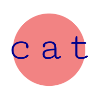
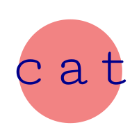

Hello.
Welcome to Etelä, a small 2 minute relaxation station.
For the best experience possible, using headphones is recommended.
Please choose one of the options underneath.

Welcome to Etelä, a small 2 minute relaxation station.
For the best experience possible, using headphones is recommended.
Please choose one of the options underneath.

Etelä is a relaxation tool, using looping and reacting sound, imported images and low-key interaction through mouse clicks and movement. It consists of three P5JS scenes linked together through an index. Each scene provides a different combination of image, sound and interaction. Get relaxing!!